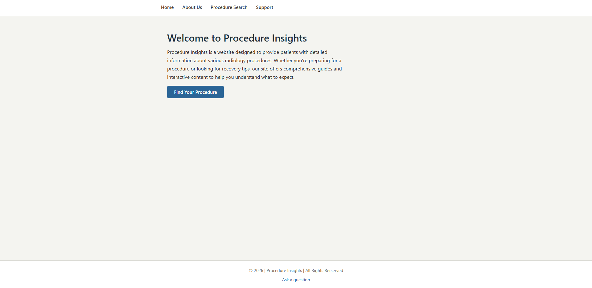

Peer Review 2 - Henley, Jack

- Submission: Correct Link
- File/Folder Names: Correctly named using proper naming conventions.
-
Design
- The pages font sizing and contrast is sufficient for readability and accessibility. The font choice is also good and easy to read.
- Page has site colors and fonts using the standard .css file.
-
CRAP
- Contrast:The website easy to read, the colors contrast well and aid with that. I will say that the website is very "greyscale" and could benefit from some additional color to make it more visually appealing and engaging for users.
- Repetition: The website uses a consistent color scheme and font choices throughout the pages.All pages have a similar layout and design, which helps to create a cohesive and unified look for the website.
- Alignment: Alignment is good and creates a balanced and visually appealing design. The content is well-organized and easy to read, with clear headings and sections that help to guide the user's eye through the page.
- Proximity: Overall the website has good proximity everything is well spaced and nothing feels too bunched up or close together.
-
Page has within it:
- Header: Yes
- Main: Yes
- Footer: Yes
- Nav: Yes
- Header has site/brand header with text in an h1: Yes
- Main starts with name of page as an h2 and does not include name of site/brand: no
- Page has brand tagline somewhere (make up a slogan and include it on every page in a consistent location): no.
-
Page has footer with
- Menu for user's pages: No.
- Page has html validation button/link and validates: No.
- Page has css validation button/link and validates: No.
- Notes: Overall I think the website is designed pretty well and is overall easy to navigate and understand. however, I would suggest adding some sort of visual element to make it more engaging for users. As its currently quite monotone and greyscale in terms of color pallette. You could also consider changing the color pallete itself to be more vibrant and visually appealing but you run the risk of losing your simple, clean, and professional look.